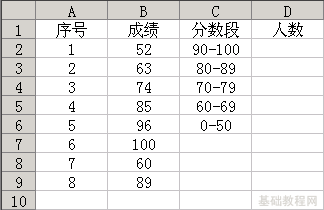
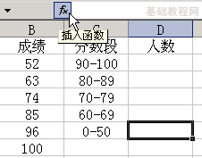
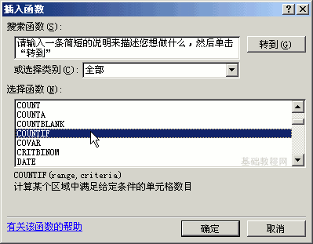
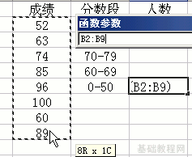
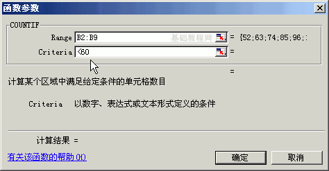
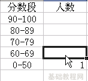
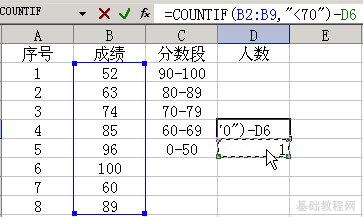
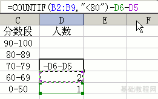
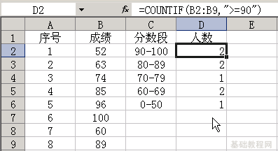

Excel 基础入门教程
统计分数段 返回
有时候需要按分数段统计人数，比如90分的人数，80分的人数等等，下面我们来看一个练习；
1、启动Excel
1）点击“开始－所有程序－Microsoft－Microsoft Office Excel 2003”；
2）出现一个满是格子的空白窗口，这就是一张电子表格了，第一个格子看着边框要粗一些，处于选中状态；

2、统计分数段
1）输入一个8个成绩的成绩表，包含序号和成绩，并输入 90-100、80-89、70-79、60-69、0-50 几个分段；
2）选中“0-50”右边的单元格，点编辑栏里的fx，准备输入公式，
从低到高分段，先算最低分的一段；

3）在出来的函数列表里，在中间选择“全部”，然后在下面的列表里选择 COUNTIF 函数，点确定按钮；

4）接下来是 COUNTIF 函数面板，用鼠标拖动选中所有成绩，这个是范围；

5）然后在第二行，条件里点一下，切换到英文输入法，输入小于号和60，然后点“确定”： <60

这样就可以统计出60分以下的人数了；
6）再选中“60-69”段旁边的单元格，点编辑栏里的fx，准备输入公式；

7）在出来的函数面板里，还选择 COUNTIF 函数，然后点“确定”按钮，
拖动选中所有成绩，在第二行条件输入小于70，然后点“确定”： <70
8）回到表格窗口后，在编辑栏的公式后面点一下，然后输入减号，点一下刚才统计出来的0-59分数段的人数，然后点右边的绿色勾确定，
因为70分以下的除了60分段的，还包括50分以下的，减去50分的剩下就是60分以上的；

9）同样在选中70-79右边的单元格，选择 COUNTIF 函数，在条件里输入小于80
点“确定”以后，回来在编辑栏里，再点一下鼠标，减去刚才算出的50分段和60分段的；

10）同样的方法，求出80分段的人数，用减去两头剩下中间的方法，求出所需的分数段来；

对于 90-100 的分数段，可以在条件里输入 >=90 （大于等于90）
以“分数段”为文件名，保存文件到自己的文件夹；
本节学习了Excel中统计分数段的方法，如果你成功地完成了练习，请继续学习下一课内容；本教程由86团学校TeliuTe制作|著作权所有
基础教程网：http://teliute.org/
美丽的校园……
转载和引用本站内容，请保留版权信息和本站链接。